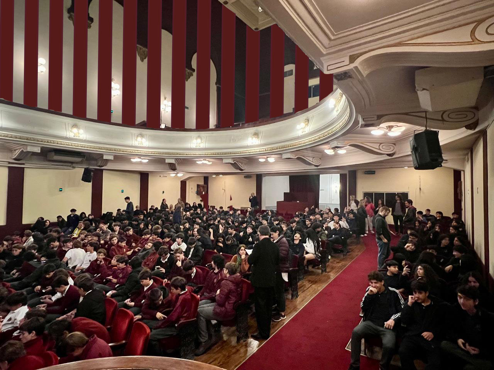
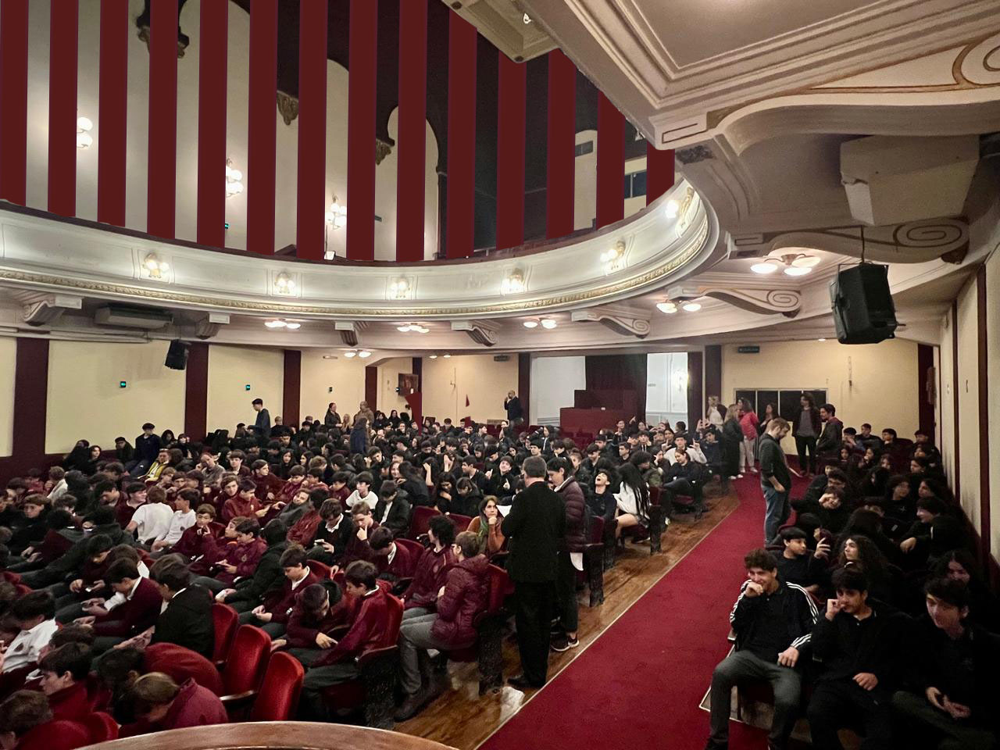

Mi hijo el doctor
Perez Luz y Hernandez Andrea 1°B-
Los alumnos de (1º, 2º y 3º A y B) fuimos al Teatro El Globo a ver la obra “M´ijo el doctor”.
Los alumnos del CEAES fuimos al teatro El globo, acompañados de las profesoras Florencia Bazzini, María Ana Rago, Claudia Iarlori, Ana Inés Rodriguez, Guillermo Garofolo, Gabriel Practicó y David Carullo.
La obra se trató de una familia del campo, la cual tenían un hijo llamado Julio. El problema aquí era que su hijo se había mal acostumbrado a la ciudad y enamoró a la ahijada de sus padres.
A nosotras nos pareció una obra que transmitía varias emociones, como: alegría, asombro, enojo y gracia, entre otras cosas.
 
